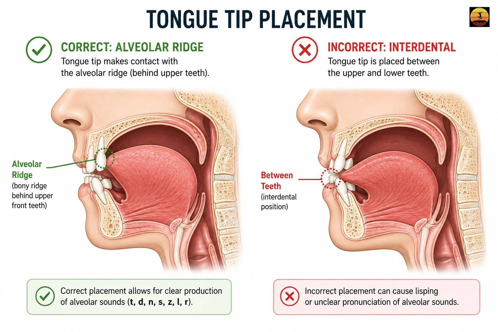

There is a word you have stopped using.
It may be your own name or "specifically," "seriously," or "success" words that are a pile of sibilant sounds. You might have found a way around them by substituting them with "particularly," "extremely," or "achievement."
The habit of substituting after enough years, becomes a reflex just as a lisp.
So, the answer to the question you are really here to find is, Yes, a lisp can be corrected at any age. How? Because Speech Therapy is the most effective way, and most teens and adults see clear improvement within three to six months of consistent practice (view study). You can unlearn the motor patterns that create a lisp, even when it has been in place for decades.
Historical Note: Churchill’s Diagnosis
In 1897, a 22-year-old Winston Churchill sought surgery to "fix" his lisp. After an examination, specialist Sir Felix Semon concluded the issue wasn't structural, but functional. Rather than surgery, Semon prescribed a specific phonetic drill: "The Spanish ships I cannot see, for they are not in sight." This remains a landmark example of how targeted practice, not medical intervention, is the key to rewiring speech patterns.
How Speech Therapy Corrects a Lisp
The first thing an SLP would do is identify which lisp you have.
- Frontal Lisp: Here, the tongue comes between the teeth while producing the "S" sounds that become "th."
- Lateral Lisp: Here, the air from the mouth escapes over the sides, producing a wet or slushy sound.
- Dentalized Lisp: Here, the tongue presses the back of your molars.
- Palatal Lisp: Tongue is contacting with the soft palate (roof of the mouth) while making the sibilant sounds of "S and Z."
Misidentifying the type is the single most common reason therapy doesn't work and the single most important reason to get assessed before practising independently.
Second, they install the motor sequence through the traditional articulation hierarchy (ASHA Practice Portal):
- Sound in isolation (S, S, S, ssssssssss)
- Syllables (sa, see, so, sue, say)
- Words (sun, sock, seed, same, safe)
- Phrases and sentences
- Spontaneous conversation
Each level needs to be stable before advancing to the next.
Third, the part most people miss entirely, they ensure you accumulate the correct rep count that motor learning actually requires.
50 to 100 correct repetitions per session is the minimum needed to begin changing a motor pattern.
100 to 300 is optimal for establishing it.
300 or more is required for lasting consolidation (view study).
A practice trial confirms this, where participants producing 100 to 150 correct targets in a 15-minute block showed significantly stronger outcomes than those producing 30 to 40 (Edeal & Gildersleeve-Neumann, 2011, AJSLP).

Diagram comparing correct 'S' tongue placement on alveolar ridge versus incorrect interdental lisp position.
Not sure which type of lisp you have
Most people guess wrong. Frontal and dentalized lisps sound nearly identical, and the fix is different for each.
Find your specific type, and know your exact next step.
Lisp Types at a Glance
| Lisp Type | What You Hear | Developmentally Normal? | Self-Resolves? | Home Correction Possible? | Typical Treatment Duration |
|---|---|---|---|---|---|
| Frontal / Interdental | "S" sounds like "th" (sun → thun) | Yes, under age 4.5–5 | Sometimes, before age 5 | Possible for mild cases | 8–16 weeks structured practice |
| Dentalized | "S" sounds flat, slightly dull | Yes, under age 4.5 | Sometimes, before age 4.5 | Possible with guided practice | 8–16 weeks |
| Lateral ("slushy") | "S" sounds wet, airy, spitty | Never | Never | Rarely — professional feedback essential | 6–12+ months |
| Palatal | "S" sounds muffled or hollow | Never | Never | Not recommended without guidance | 6–12+ months |
Sources: McLeod & Crowe, 2018, AJSLP; Maas et al., 2008, AJSLP; ASHA Practice Portal.
Can You Correct a Lisp at Home?
For mild frontal lisps, sometimes. For lateral and palatal lisps, rarely.
The answer depends on a single word: visibility.
A frontal lisp is a placement error you can see. Try it now, open your phone's front camera or take a mirror — the tongue tip slides forward between the teeth.
Once you can see it, practise from it's correct position. With structured drills and consistent rep counts, a mild frontal lisp can improve meaningfully at home.
A lateral lisp is invisible from the outside. The tongue braces wrong against the molars and air escapes over the sides. You can hear the wetness, but you cannot see the cause or feel the fix without training.
People who try to self-correct a lateral lisp without guidance usually make the pattern worse. Per Maas et al. (2008), only correct repetitions count toward motor learning.
Incorrect reps at high volume do not move you forward they reinforce the error highly.
The rule: if you can see the error in a mirror, home practice can help. If you can only hear it, you need trained feedback or a structured app with real-time recording to fix it safely.
Do You Have a Lisp?
Take the free 2-minute assessment to check if you have a lisp. Get instant results.
Analyze my speech →Home Exercises — Structured by Level
Three to five minutes daily beats one long weekly session.
Work in order. Don't advance until the current level is accurate. Target 50–100 correct reps per session. Only correct reps count.
1. Find the position — no sound yet
Teeth lightly together, lips in a relaxed smile. Place your tongue tip on the alveolar ridge — the small bump just behind your upper front teeth — without touching the teeth or sliding between them. Hold for five seconds. Release. 10 reps. Most people with a lisp have never consciously felt where the tongue is supposed to be.
2. The /s/ hold
Same position. Push a steady stream of air forward. Result: a clean ssssss for five seconds — no tongue visible, no wetness. 10 reps. Record yourself and listen back immediately.
3. Syllable drills
From the /s/ hold, open into a vowel without letting the tongue slip: sa — see — so — sue — say. The /s/ entry must be clean before the vowel. 20 reps each (100 total).
4. Word practice
Sun, soap, sock, seed, same, safe, sit, soft, sad, send. Five reps each (50 total). Record every session. Rep one versus rep fifty is your daily progress marker.
5. Minimal pairs drill
Sigh / thigh — sin / thin — sick / thick — sank / thank — sing / thing. Ten passes. Trains your ear to hear the difference, which accelerates the motor fix.
6. The Spanish ships sentence
"The Spanish ships I cannot see, for they are not in sight." Churchill chose it because it is dense with /s/. 10 reps. Record the first and last. Once it's clean, write your own sentence — packed with /s/ and "Z", from your actual life.
For lateral and palatal lisps: Exercises 1 and 2 work as awareness drills, but the placement instruction is different, and unguided practice carries real risk of reinforcing the wrong pattern. Get your type confirmed first.
How Long Does Lisp Correction Take?
Less than people expect, but more than they hope.
For most teens and adults: three to six months of consistent practice for clearly audible improvement, with full carryover into spontaneous conversation taking a few months longer (Yiu et al., 2026).
The first weeks create awareness. By month two, word-level accuracy becomes solid. By month four, control over conversations happens.
Three factors that are vital:
Type. Frontal fastest. Lateral and palatal slower, because the entire airflow path has to be redirected, not just the tongue tip repositioned.
How long has the pattern been running? Teens generally progress faster than adults in their thirties and forties, not because adults can't do it, but because the motor pattern has had fewer years of repetition to strengthen.
Daily frequency. Ten focused minutes per day, hitting 50 to 100 correct productions, compounds faster than any other single variable.
Does a Lisp Ever Go Away on Its Own?
If you are reading this as a teen or an adult, the honest answer is no.
A small developmental window does exist. Mild frontal lisps in children under age 4.5 to 5 sometimes resolve naturally as the motor system matures and permanent teeth come in.
Because at that age, a frontal "S" is a developmentally normal variation, not a fixed error (McLeod & Crowe, 2018). After age 5, the pattern consolidates. By age 7 or 8, a lisp that has not resolved is not going to resolve on its own.
Lateral, palatal, and dentalized lisps operate differently. They are never part of typical speech development at any age. Any child displaying a lateral or palatal lisp should be evaluated by an SLP regardless of age, and neither type self-resolves (ASHA Practice Portal).
If your lisp has stayed with you into your teens or adulthood, the reason is not weakness or a lack of effort when you were younger. The developmental window closed, or you had a non-developmental type from the start, and the pattern ran itself in through millions of repetitions. Hoping it will quietly fade is the same as hoping you will gradually forget how to ride a bicycle. Without reps in a new direction, the pattern is permanent.
A mystery has no end date. A math problem does.
Churchill's phrase was dense with the one sound that failed him every time he said it — until it didn't. Your phrase doesn't need to be famous. It needs to be packed with "S" and "Z", built from your actual life, rehearsed correctly, and repeated often enough that the new pattern becomes the one your brain reaches for first.
The word you stopped saying? That is the word you start with.
Conclusion
A lisp can be corrected at any age. Not eventually, not maybe — with the right technique, the right rep count, and enough consistency, the pattern changes.
Churchill was told the same thing in 1897. The science has only sharpened since. The motor sequence that creates your lisp is the same kind of sequence that creates every other automatic movement your body has learned and relearned across a lifetime.
It can be replaced. The word you stopped saying is the word you start with.
The clinic built for exactly this is coming.
Join the waitlist — be first when we open doors. SLP-developed. Evidence-based. Built for you.
Frequently Asked Questions
No. A lisp can be corrected at any age. Adults move through the cognitive understanding phase faster than younger learners — the placement instructions make immediate sense. The trade-off is volume: you need more correct repetitions to override decades of consolidated motor habit. Most adults see clear, audible improvement within three to six months of consistent structured practice (Yiu et al., 2026).
Yes. When treatment is completed and the new pattern is generalised into everyday conversation, it becomes automatic — the same way the original lisp was automatic. Relapse is rare once generalisation is complete. Brief tune-up practice can help if old patterns resurface under stress or fatigue, most commonly in the six months immediately following therapy.
Because the developmental window for spontaneous resolution closes around age 5 to 7. After that, the motor pattern is too consolidated to fade passively. If your lisp is lateral, palatal, or dentalized, it was never going to resolve naturally — those types are not part of typical speech development at any age. Active retraining with correct repetitions is the only path forward (ASHA Practice Portal; McLeod & Crowe, 2018).
No. A lisp is a functional speech disorder — it involves how the tongue moves, not how it is built. Churchill himself asked Sir Felix Semon to cut a ligament in his tongue, and was refused for exactly this reason (International Churchill Society). The exception is when an active tongue tie or structural jaw issue is directly restricting tongue movement — in those cases, an SLP may refer you to an ENT, orthodontist, or dentist for evaluation before or alongside therapy.
Speech therapy costs vary widely by location, provider, and delivery format. In-person private sessions typically range from ₹1,000–₹3,500 per session in India and $80–$250 in the US. Most people need 12 to 30 sessions in total. Teletherapy generally runs cheaper than in-person. Structured app-based practice is the lowest-cost option and works well either as a supplement to formal therapy or — for mild frontal lisps — as a primary path.
Next Steps
Understanding the problem
- What causes a lisp? — The anatomical, structural, and developmental factors behind a lisp, explained without jargon.
- What causes a lisp in adults? — Why childhood lisps persist into adulthood and what that means for treatment now.
- Lisp test — find your type in 5 minutes — Free self-assessment with your specific type and matched starting exercises.
Practice and treatment
- How to fix a lisp — The full structured approach SLPs use, broken into steps you can follow.
- How to fix an S-lisp — Targeted technique and drills for the most common lisp type.
- Lisp practice words and tests — Full word lists and sentence drills organised by hierarchy level.
Inspiration and more
- Causes of rhotacism — The closely related "R" articulation disorder and how it compares.
- Is rhotacism treatable? — What works for "R" correction at every age, and how long it takes.
Sources and Clinical Research
McLeod, S., & Crowe, K. (2018). Children's Consonant Acquisition in 27 Languages: A Cross-Linguistic Review. American Journal of Speech-Language Pathology, 27(4), 1546–1571.
Establishes that "S" and "Z" are among the last acquired consonants across languages, anchoring the developmental resolution threshold at age 4.5–5.
View SourceMaas, E., Robin, D. A., Austermann Hula, S. N., Freedman, S. E., Wulf, G., Ballard, K. J., & Schmidt, R. A. (2008). Principles of Motor Learning in Treatment of Motor Speech Disorders. American Journal of Speech-Language Pathology, 17, 277–298.
Establishes the 50 / 100 / 300 correct-repetition thresholds that underpin all rep-count claims in this article.
View SourceEdeal, D. M., & Gildersleeve-Neumann, C. E. (2011). The Importance of Production Frequency in Therapy for Childhood Apraxia of Speech. American Journal of Speech-Language Pathology, 20(2), 95–110.
Demonstrates that 100–150 correct productions per 15-minute block produce significantly stronger outcomes than 30–40, supporting the daily rep targets in the home exercise section.
View SourceYiu, O. Y., Wong, W. H. S., Pokta, F., Fong, A. Y. T., Tso, W. W. Y., & Ip, P. (2026). The Effectiveness of Ultrasound Visual Biofeedback in Articulation Therapy for Children and Adolescents with Speech Sound Disorders: A Systematic Review and Meta-Analysis. International Journal of Language & Communication Disorders.
Synthesised 35 studies showing a large pooled effect on articulation accuracy; used for 3–6 month adult improvement timeline.
View SourceSchmidt, R. A., & Lee, T. D. (2005). Motor Control and Learning: A Behavioral Emphasis (4th ed.). Human Kinetics.
Foundational text on practice frequency, blocked vs variable practice, and retention — the source Maas et al. 2008 draws from.
View SourceAmerican Speech-Language-Hearing Association. Speech Sound Disorders: Articulation and Phonology — Practice Portal.
Primary ASHA clinical guideline used by licensed SLPs to assess and treat lisps, including the articulation hierarchy and type classification.
View SourceAmerican Speech-Language-Hearing Association. Orofacial Myofunctional Disorders — Practice Portal.
Establishes the prevalence of OMD (up to 38% general population; up to 81% in children with articulation problems, Kellum 1992) and the clinical link between tongue thrust and frontal lisps.
View SourceBowen, C. (2014). Children's Speech Sound Disorders (2nd ed.). Wiley-Blackwell.
Distinguishes developmental from non-developmental lisp types, establishes the 4.5-year clinical threshold, and confirms that lateral and palatal lisps are never developmentally typical.
View SourceInternational Churchill Society. Churchill's Speech Impediment: A Lisp, Not a Stutter.
Documents the verified 1897 consultation between Churchill and Sir Felix Semon, the refusal of surgery, and Churchill's prescription of daily phrase practice.
View SourceSix Minutes Public Speaking. (2015). How to Be a Confident Speaker with a Speech Disorder.
First-person account from a speaker with a lifelong lisp who actively restructures presentations to remove "S" words — published documentation of word avoidance behaviour in adults.
View Source